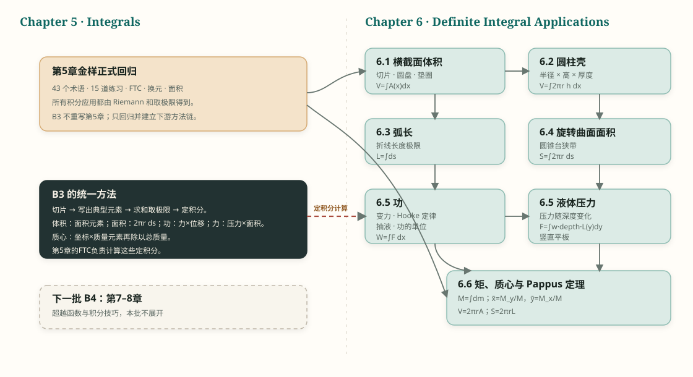

新增内容
完整制作第 6 章 6.1–6.6：从体积极分到质心、功和液体压力，并保留几何图与物理量的单位和方向。
本批正式回归第 5 章的定积分与 FTC，再完整制作第 6 章：横截面体积、圆柱壳、弧长、旋转曲面面积、功与液体压力，以及质心和 Pappus 定理。统一方法始终是“典型元素 → Riemann 和 → 定积分”。
00 · Batch Brief
完整制作第 6 章 6.1–6.6：从体积极分到质心、功和液体压力，并保留几何图与物理量的单位和方向。
对已认可的第 5 章执行 5.1–5.6 全量回归，包括 43 个术语、15 道练习、FTC 与换元公式。
所有新应用都先辨认薄片、面积、长度、功或质量元素，再把求和取极限写成定积分。
01 · Dependency Map

体积积分面积元素，曲面积分弧长元素，质心积分坐标乘质量元素；先写薄片元素，再确定上下限。
功积分力乘位移，液体作用力积分压强乘水平条带面积。单位和方向必须与符号一起检查。
02 · English Terminology
第 5 章的 43 个术语继续由金样提供。本表补充体积、弧长、曲面、功、压力、矩和质心术语，并强调每个量对应的“典型元素”。
| English term | 中文译名 | 简明定义 | 对应节 | 关键公式 / 提示 |
|---|
| 易混项 | 关键区别 | 核对问题 |
|---|---|---|
| disk / washer | 圆盘截面无孔，垫圈截面有内半径。 | 区域是否接触旋转轴？ |
| washer / shell | 垫圈切垂直轴的截面，壳法取平行轴的薄条。 | 厚度是沿轴方向还是径向？ |
| arc length / surface area | 前者积分 ds，后者积分 2π半径·ds。 | 旋转的是曲线还是求曲线本身长度？ |
| work / force | 功是力乘位移后的积分，力是功的变化率。 | 是否还要乘（或积分）移动距离？ |
| mass / center of mass | 质量是 dm 的积分，质心是矩除以质量。 | 是求总量还是求平衡位置？ |
| Pappus volume / surface | 体积用区域面积 A，曲面面积用弧长 L。 | 旋转的是平面区域还是曲线本身？ |
New Chapter Summary
把定积分从面积推广到体积、弧长、曲面面积、功、液体压力和质心；核心不是背公式，而是建立正确的典型元素和积分上限。
切片法把立体沿 x 轴切成薄片，用横截面积 A(x) 乘厚度近似体积。圆盘法是截面半径 0 到 R(x) 的实心圆；垫圈法要减去内半径 r(x) 的圆孔。
横截面积必须沿积分区间可积。
垫圈：R(x)≥r(x)；圆盘可看作内半径为 0。
壳法取平行于旋转轴的薄条，薄条旋转成近似薄圆柱壳。体积元素为 2π·壳半径·壳高·壳厚；当沿 y 方向取条带时，厚度变量就是 dy。
壳半径是薄条到轴的距离；壳高由上下边界之差给出。
光滑曲线的小段可由三角形近似，长度元素 ds=√(dx²+dy²)。把各小段长度相加并取分割极限，得到弧长积分；如果 dy/dx 不存在而 dx/dy 存在，可改用 y 作自变量。
函数需有连续导数；弧长函数从固定起点累计 s(x)=∫ds。
曲线小段旋转成薄圆锥台，面积元素为 2π·旋转半径·ds。绕 x 轴时半径通常是 y=f(x)，绕 y 轴时需交换公式中的变量。
f(x)≥0；绕 y 轴时将半径改为 x=g(y)并使用对应 ds。
变力做功是 F(x) 对位移的积分。弹簧在弹性范围内满足 Hooke 定律；抽液时每层薄片的重量乘提升距离；竖直平板液体压力随深度变化，需对水平条带积分。
力与位移方向一致时功为正；单位和提液距离必须一致。
depth 与 L(y) 均随条带高度变化；淡水 weight-density 约 9800 N/m³。
质心是质量分布的加权平均位置：先积分总质量与关于坐标轴的矩，再用矩除以总质量。均匀平面区域和曲线的质心称为形心；Pappus 定理利用形心经过的距离计算旋转体体积和曲面面积。
二维薄板需分别计算 M_x、M_y；对称性可先判断某个坐标。
轴不能穿过区域或曲线的内部；r 是形心到轴的距离。
| 教材例题 | 结论 | 位置 |
|---|---|---|
| Example 1（6.1） | 3 m 高、方形截面成比例的棱锥体积为 9 m³。 | 教材 p.333–334 / PDF p.334–335 |
| Example 4（6.1） | y=√x 在 [0,4] 绕 x 轴旋转，圆盘法得到 8π。 | 教材 p.335 / PDF p.336 |
| Example 9（6.1） | y=x²+1 与 y=−x+3 间区域绕 x 轴旋转，垫圈法得 117π/5。 | 教材 p.338–339 / PDF p.339–340 |
| Example 1（6.2） | 抛物线区域绕 x=−1 旋转，圆柱壳法得 45π/2。 | 教材 p.343–345 / PDF p.344–346 |
| Example 2（6.3） | f(x)=x³/12+1/x 在 [1,4] 的弧长为 6。 | 教材 p.352–353 / PDF p.353–354 |
| Example 1（6.4） | y=2√x 在 [1,2] 绕 x 轴旋转，曲面面积可化为含 √(x+1) 的积分。 | 教材 p.358–359 / PDF p.359–360 |
| Example 2–3（6.5） | k=240 N/m 压 0.1 m 做功 1.2 J；k=30 N/m 拉伸 2 m 做功 60 J。 | 教材 p.363–364 / PDF p.364–365 |
| Example 7（6.6） | 半径 a 的圆盘中心距轴 b 旋转成环面，体积为 2π²ba²。 | 教材 p.380 / PDF p.381 |
面积乘无穷小厚度才是体积元素；A(x) 本身不是体积。
外半径减内半径；平方后顺序虽不影响正负，但漏掉内半径会得到错误体积。
若轴是 x=L，半径通常是 x−L，不是 x。
旋转曲面元素是 2πr ds，不能只乘 Δx。
功还必须考虑距离；抽液时每片的提升距离随高度变化。
x̄=M_y/M，ȳ=M_x/M；M_x 使用 y dm，M_y 使用 x dm。
04 · Golden Regression
第 5 章完整内容继续保存在第 4–5 章金样页；本批逐节检查其术语、定理、换元、面积和打印产品标准。
| 节 | 回归检查 | 证据 | 状态 |
|---|---|---|---|
| 5.1 Finite Sums | 有限和、上下和、位移和平均值的表述 | 43个第5章术语之一；公式与Q5-02等回归一致 | 通过 |
| 5.2 Sigma and Riemann Sums | Sigma、分割、范数、左右端点和公式 | Q5-01、Q5-03、Q5-04 | 通过 |
| 5.3 The Definite Integral | 极限定义、可积性、性质、平均值 | Q5-05至Q5-07 | 通过 |
| 5.4 FTC | FTC两部分、净变化、总面积 | Q5-08至Q5-10；KaTeX无错误 | 通过 |
| 5.5 Substitution | u换元、代回、任意常数 | Q5-11；公式源与练习一致 | 通过 |
| 5.6 Definite Substitution and Area | 积分限变换、对称性、两曲线面积 | Q5-12至Q5-15 | 通过 |
第5章43个术语、15道练习、6个节、关键KaTeX公式和来源记录均通过；没有P0/P1缺陷。
FTC、换元、定积分性质和曲线间面积成为第6章所有体积、功、压力与质心计算的引擎。
05 · Deliberate Practice
题目按几何、弧长、曲面、物理和质心分类；先独立完成，再展开提示、关键步骤和完整解析。
06 · Recall & Diagnosis
| 练习编号 / 知识点 | 错误类型 | 应回看的内容 |
|---|---|---|
尚未编辑
07 · Quality Gate
| 检查项 | 结果 | 证据 / 说明 | 缺陷等级 |
|---|---|---|---|
| G1 版本与来源 | 通过 | 第6章教材页332–387和PDF页333–388逐节核对。 | 无 |
| G2 章节覆盖 | 通过 | 6.1–6.6全部覆盖；第5章5.1–5.6逐节回归。 | 无 |
| G3 术语 | 通过 | 第6章新增术语完整；第5章43个术语回归通过。 | 无 |
| G4 定理与公式 | 通过 | 体积、弧长、曲面、功、压力和Pappus条件逐项核对。 | 无 |
| G5 例题结论 | 通过 | 重要例题锚点带教材页和PDF页；不复制长段原文。 | 无 |
| G6 练习与答案 | 通过 | 第6章15道新题五类题型；第5章15题回归通过。 | 无 |
| G7 计算与渲染 | 通过 | 18项代表性计算复算通过；14个页面公式由本地KaTeX渲染，错误为0。 | 无 |
| G8 图表与链接 | 通过 | B3知识图、第5章逐节回链、术语和练习检索可用。 | 无 |
| G9 网页与打印 | 通过 | 桌面/移动端无页面级溢出；批次PDF完成逐页检查。 | 无 |
| G10 版权与版本 | 通过 | 原创提炼与练习，未复制整节教材，未混入外部资料。 | 无 |
第6章依赖截面方向和旋转轴。已把切片变量、半径、厚度和单位放入专项检查。
功、压力、质量使用不同物理量。每个积分都要求核对单位、方向与典型元素。
第5章已认可但不免检；已完成术语、练习、公式和来源回归，并保留独立证据。
第5章不重写，第7–8章未启动。若后续改动第5章，必须回溯B3的积分应用链接。
08 · Source Ledger
| 节 | 教材页 | PDF物理页 | 本章内部标题 |
|---|---|---|---|
| 6.1 | 332–341 | 333–342 | 横截面、圆盘和垫圈体积 |
| 6.2 | 343–350 | 344–351 | 圆柱壳体积 |
| 6.3 | 351–355 | 352–356 | 弧长与弧长函数 |
| 6.4 | 356–361 | 357–362 | 旋转曲面面积 |
| 6.5 | 362–370 | 363–371 | 功、弹簧、抽液与液体作用力 |
| 6.6 | 371–382 | 372–383 | 矩、质心、形心与Pappus定理 |
| Ch.5 | 266–331 | 267–332 | 调用已认可金样，仅做正式回归 |